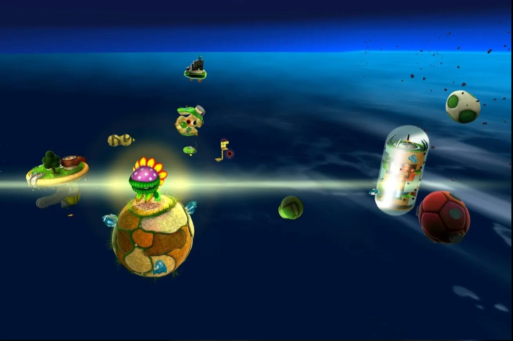
01
Exploration
Good Egg Galaxy
La première grande galaxie de l'aventure, composée de petites planètes colorées et de paysages étonnants.

EXPLORE L'UNIVERS
Embarquez avec Mario dans un voyage à travers l'espace ! Découvrez des mondes extraordinaires, des planètes mystérieuses et des environnements aussi surprenants que variés.
12 mondes à découvrir au fil de l'aventure

01La première grande galaxie de l'aventure, composée de petites planètes colorées et de paysages étonnants.
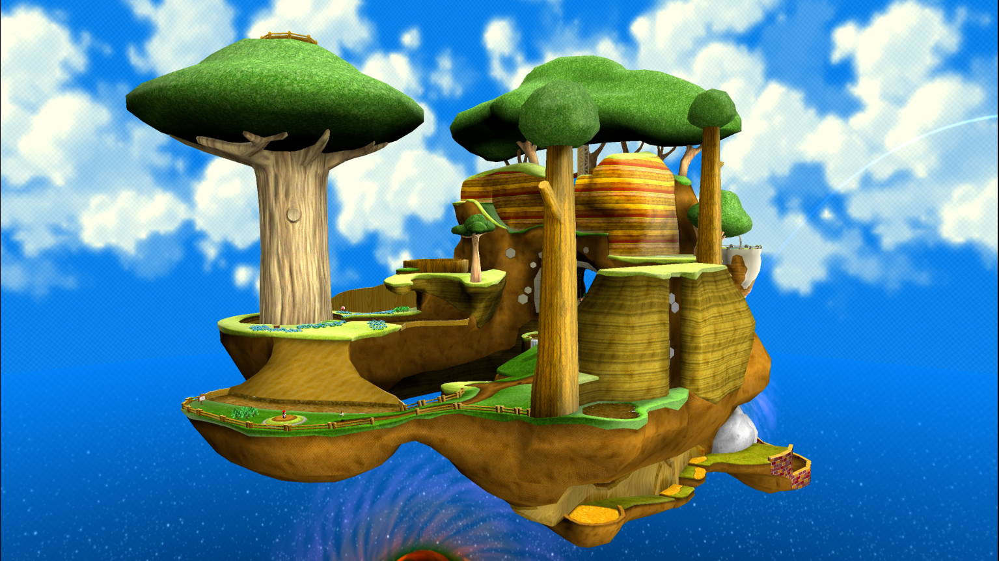
02Un monde verdoyant où Mario découvre le royaume des abeilles et ses paysages remplis de vie.
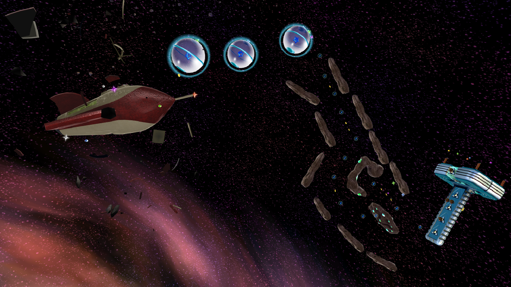
03Un univers constitué de débris spatiaux, de plateformes flottantes et de petits astres.
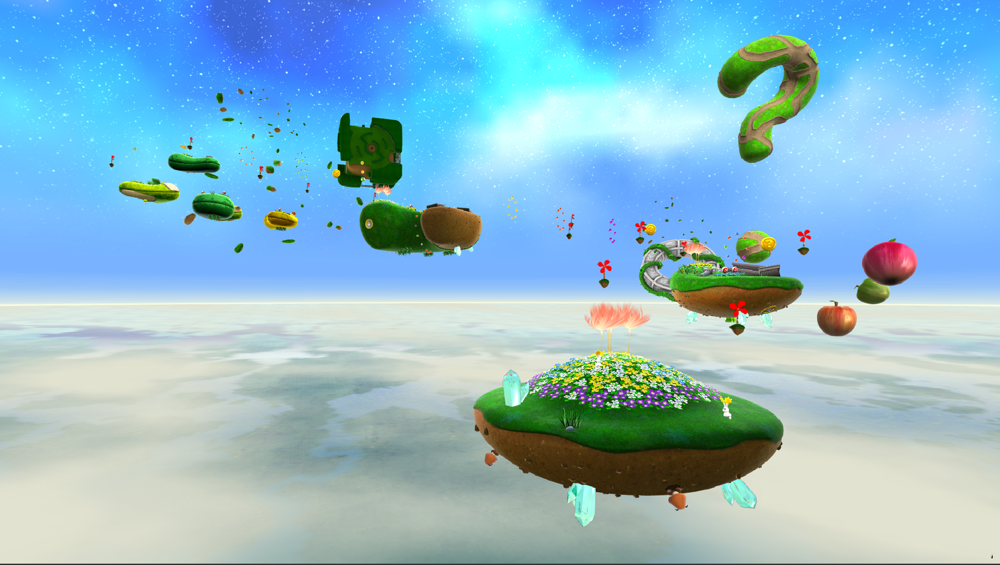
04Une galaxie pleine de verdure, de jardins suspendus et de paysages dans les airs.
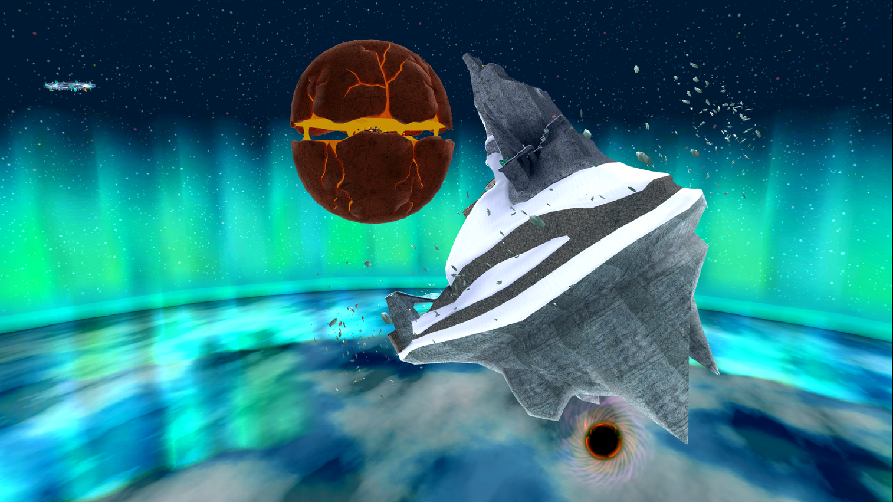
05Deux environnements opposés se rencontrent : des sommets glacés et des zones volcaniques brûlantes.
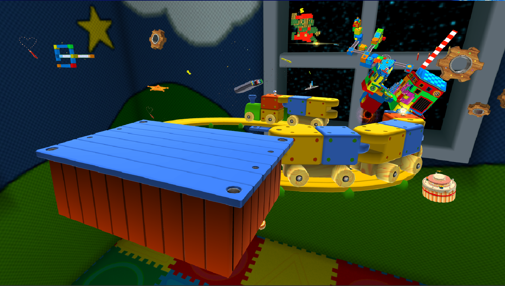
06Un monde géant rempli de jouets, de robots et de mécanismes surprenants.
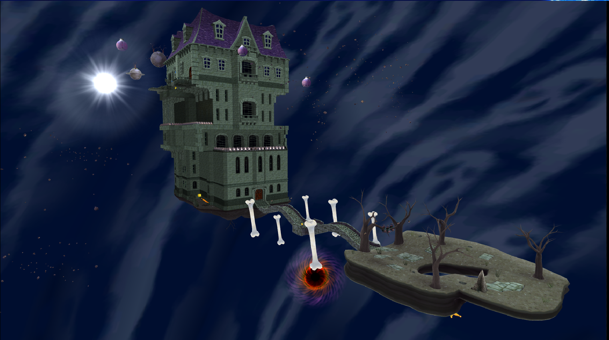
07Une galaxie mystérieuse peuplée de fantômes, de maisons hantées et de passages secrets.
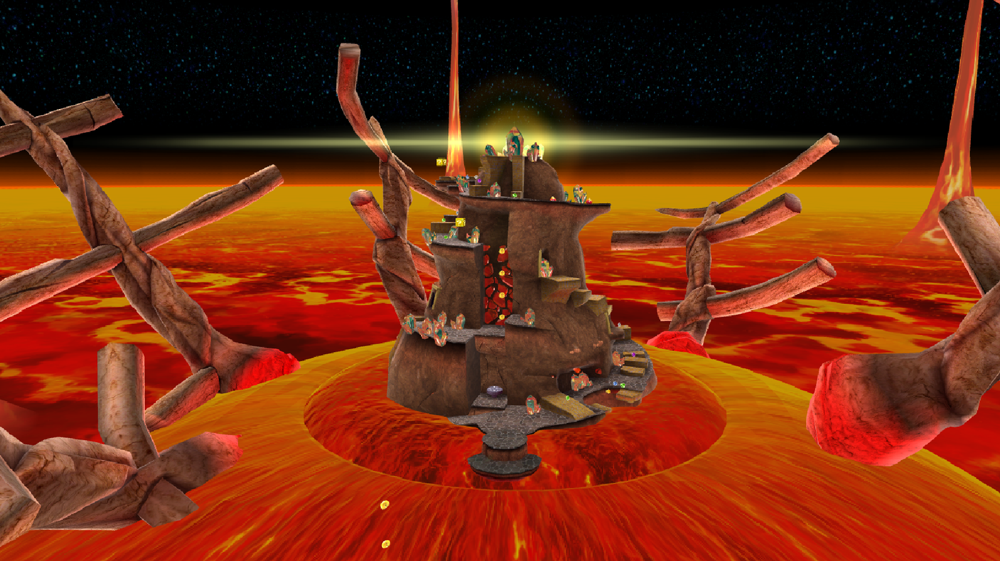
08Un environnement volcanique dangereux, rempli de lave et de plateformes instables.
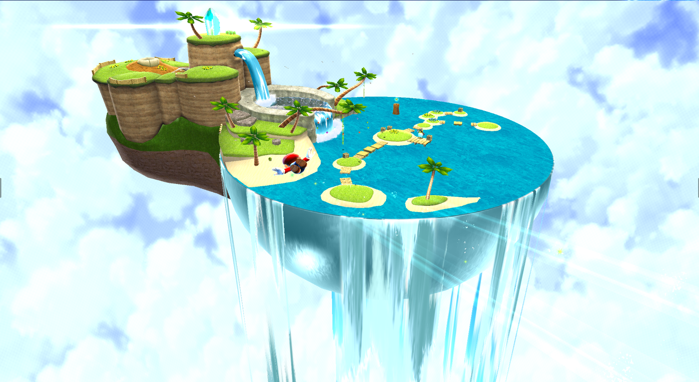
09Une galaxie ensoleillée avec une grande plage, des eaux limpides et des fonds marins.
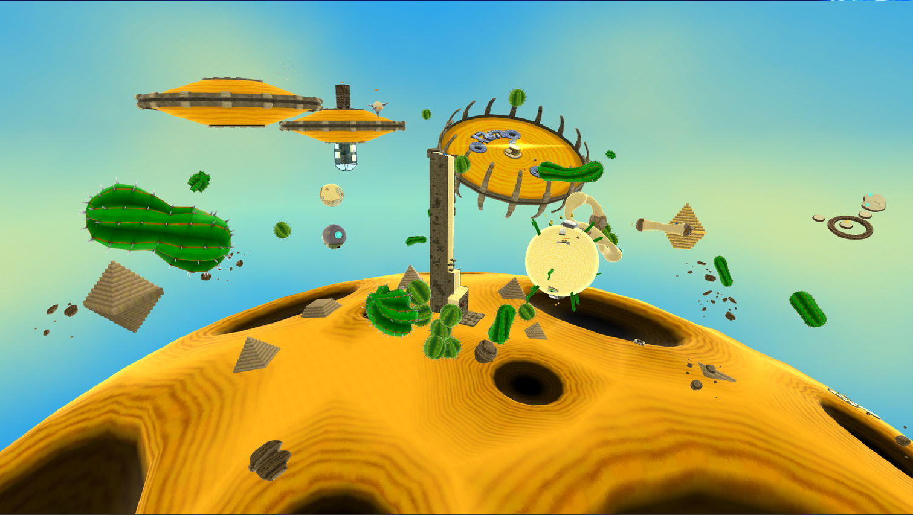
10Un monde désertique composé de dunes, de sable mouvant et de structures mystérieuses.
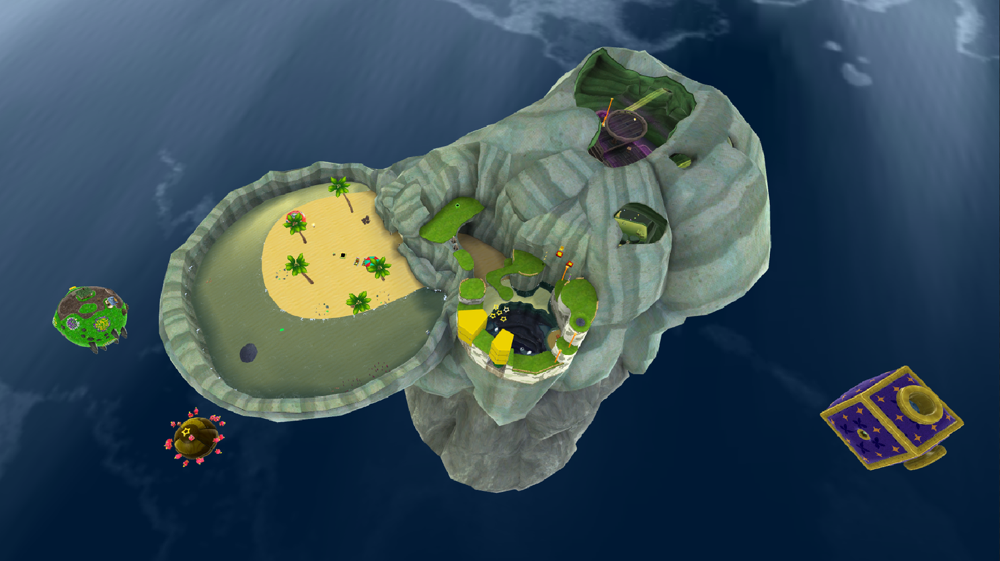
11Une galaxie sombre et inquiétante, avec une atmosphère mystérieuse et des zones sous-marines.
 12
12
Le niveau final de l'aventure, où Mario doit affronter Bowser dans un décor spectaculaire.
Chaque galaxie possède son ambiance, ses défis et ses secrets. À travers elles, Mario découvre un univers rempli de surprises et de rencontres inoubliables.